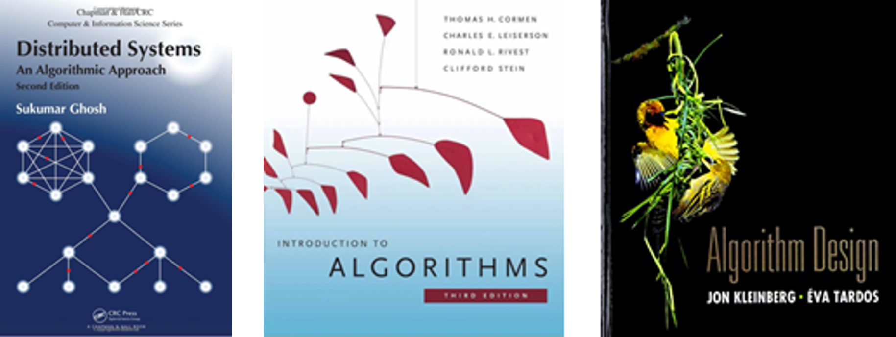

Teaching
Postgraduate Courses
- CS06201a: Network Computing and Efficient Algorithm (for PhD students, in English), University of Science and Technology of China (USTC), Spring 2017, 2018, 2019, 2020
- Advanced Algorithms(for PhD students, in Chinese), Jinan University, Fall 2014, 2015.
Undergraduate Courses
- 011146: Introduction to Algorithms (in Chinese), USTC, Fall 2019
- 601011: Seminor for Freshmen: Science and Society, USTC, Fall 2019.
- Computer Concepts, International School, Jinan University, Fall 2014.
- Computer Architecture, International School, Jinan University, Spring 2014, 2015 [Rank in the course assessment: 5/169].
- Topics in Theory of Computing, International School, Jinan University, Fall 2013, 2014, 2015.
